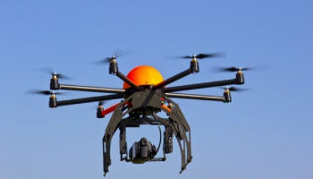

Drone

What is a Drone?
“Drones” are probably the most advanced equipment in the field of robotics,
aeronautics and electronics. They are aerial vehicles which come in wide varieties of sizes, shapes and functions, which are controlled
either by remote or control systems from the ground. They are generally used to carry out tasks in which manned flight is considered to
be risky. Drones mostly find use in military services, but are now days finding use in various civilian operations such as search and rescue,
weather analysis etc.
How do they work?
• Construction of a drone
A typical drone is made of light composite materials to reduce weight and
increase manoeuvrability. Also, the
composite material strength allows it to
cruise at extremely high altitudes. They are equipped with state of the art
infra-red cameras, Global Positioning Systems (GPS),
laser or GPS guided
missiles and other top secret systems.
They can be controlled by remotes or a ground cockpit. Drones come in a
wide variety of sizes, some which can be launched by hand to some which
require short runways.
A UAV system has two parts, the drone itself and the
control system. The plane is controlled from the ground by trained combat
pilots or programmers.
The surveillance data is sent to satellites
from which it
is received by the ground forces to form the attack strategies and vulnerable
areas in the enemy’s camp. Drones can fly at
extremely high altitudes to
avoid detection. Along with all these features, comes a heavy price tag.